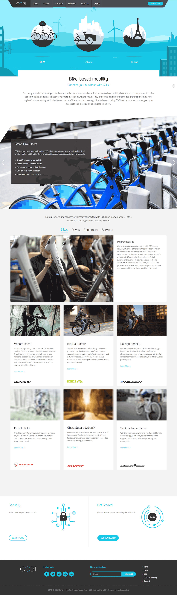

COBI is helping to revolutionize the overall cycling experience by connecting your smartphone to your bike. This award-winning system provides bikes with intelligent assistance. The result is more safety, convenience, and fun on any trail or bike path.
Based in Germany, COBI is a startup revolutionizing cycling by connecting your bicycle to your smartphone. They hired me to build the landing page for their COBI Connect services, as well as the Web interface for their membership-only profile settings pages.
Building fast, responsive and accessible pages for the COBI marketing Web site as well as the upcoming COBI Web application.
Technologies used:
HTML5, SVG, CSS, JavaScript
Libraries/Frameworks:
jQuery (custom build)

The COBI Connect page I built. Click on the image to visit the page.
Background
COBI’s product manager Sebastian Frommherz contacted me in January 2016 because they were looking for a front-end developer to help them build a fast page for their current marketing web site which introduces COBI’s technical features to prospect clients and users, called the "COBI Connect" page (screenshotted above).
In addition to the Connect page, the project included building the front-end foundation for the new COBI web application (yet to be released). More specifically, the Web app was composed of few sections, including—but not limited to—a user dashboard, help section which included help videos and PDFs, as well as a FAQs section. Future iterations of the application would then add more sections, all tied to their product and that would help users keep track of their activities and connect their physical biking activities with their digital accounts.
I was hired to join their team and work closely with their designers to help them build a fast and responsive foundation—a foundation that I will then hand over to their front-end developer to maintain
After our initial Skype call, we both knew we wanted to work together. COBI’s interest in building a great experience for their users and emphasis on performance matched well with the principles I strive to code by. What I appreciated even more is their openness for feedback and constructive criticism even from the first call, which helped us all realize that we were on the same page, and were wanting to work towards one shared goal.
Process & Communication
Most everyday team communications took place in a Slack channel which we used for general communications such as keeping track of progress and posting and getting quick answers and questions regarding the design and UX, as well as the progress of the project.
Whenever needed, design assets would also be shared in the channel. For example, while working on implementing the design and assets, many of the assets I got (especially images) had to be redesigned and recreated to provide further and better optimizations before they could be used. To get a little more technical: many SVG images had to be recreated in Adobe Illustrator because the assets exported from Sketch were far from optimized, and would break whenever we attempted to optimize them for the Web. The designers, lead by Paul Svoboda—a very, very talented designer with an impeccable attention to detail, would recreate the assets and send them over to me via the Slack channel.
More advanced, UX-specific discussions used to happen over Skype. Sebastian, Paul and Bernhard—the COBI back-end developer, and myself would schedule a meeting to go over design requirements for the behavior that’s directly tied to the back-end and how the latter is set up. The project was based on an agile approach which welcomed changes and iterations as and when they were required and necessary based on the then current progress. These discussions were always fruitful and had a direct impact on how the design and back-end synchronized together and how they affected the design of the interface—more specifically, that of the Web application dashboard. My role as a front-end developer was to bridge and connect the two tiers to help build a more user as well as dev- and design-friendly UI/X.
I made sure I was in touch with Paul and Sebastian on an almost daily basis. Yes, I even contacted them during some weekends as we got closer to the end of the project and to the deadline. Sebastian got constant and frequent updates (even during his days off) about where we're at during the project, what issues came up when, and how we—Paul, Bernhard and myself—collaborated to come up with sensible solutions for each one as it came up. I also provided live updates of the progress by sharing a live version of the project for them to keep checking out frequently. Paul would constantly provide UI feedback and/or adjustments whenever and wherever favorable, as well as test the page's behavior for any bugs. Paul has a ridiculously impressive talent for breaking an interface :D which is invaluable when testing and making sure the end result is as bug-free as possible. His attention to detail was immensely helpful.
Testimonials
I heard about Sara the first time when my colleague sent me a link to her website. We had been searching for freelance web developers at that time to support our internal web devs. From what I heard Sara had some interesting CodeDrops and apparently was also involved with Smashing Magazine. None of which actually blew me off my feet right away. (Seriously, sorry to say, but there are so many who claim to having worked for this great company, and this great client and actually are not that good at all).
Well, turned out I was wrong. Already in the first calls we had established a great connection (I’m not talking about the Skype connection here - this was horrible). Sara was not just listening to all the stuff we had to say and present but already started to actively question our ideas and recommend alternative approaches. Excellent match - hired!
It turned out, we were completely right. Sara was very closely involved with our Design and Concept team. Technical issues and questions were resolved on the fly together with the team in a very agile way. And when saying “agile” I’m not meaning “without any plan”. The contrary: we had a pretty tight deadline which she pursued rigorously. I, as a project manager, consider it highly important if a team finds its flow and that was definitely the case here. This not only leads to better quality results but also to the team taking on responsibility for their work and making very great decisions themselves. A pleasure to see all that happen.
Next to this, and I guess this is just a PM thing, there was no worry at all to be left in the dark. Where others just close their shutters and come back from their tunnel after some time and you are sort of surprised by the result, I have been frequently updated about progress, issues which needed to be resolved and have seen development snapshots early in the process. Again, something I consider very valuable as I always felt included, in control and never was really worried the projects would crash.
And, best thing ever: it was a first timer for me to be working with somebody who gets quoted in academic work. (a talented, young web developer I know referenced Sara in his Bachelor thesis - isn’t that awesome?!?!)
Conclusion: of course, Sara doesn’t come without a price tag. But it's worth it. Up to date I have not worked with a freelancer so open-minded, innovative and not afraid to challenge client’s work as Sara. And best of all, its not just “talk”… but also “walk”. Thank you, Sara, for the great work and even more for the great experience of getting to know you and working together!
Since the larger portion of the project—namely the COBI Web application, is yet to be released, and as per the project’s Non-Disclosure Agreement, I cannot discuss any visual and/or technical details related to that part of the project. That said, there are some common principles I used throughout the development process that were shared between then Connect page and the Web app, some of which are listed below. I will share screenshots as well as a link to the Web application when it is released.
SVG for Iconography
Apart from the photography, almost every image on the COBI Connect page, as well as the Web application, was embedded using the SVG format. Small icons and non-complex illustrations are usually perfect candidates for SVG, except for when the illustrations are too intricate and contain too many details that might end up bloating the SVG file size, in which case using a high-resolution PNG image would be more suitable.
That said, none of the icons and illustrations used at COBI were really complex, and so SVG was the best candidate. Social icons and a few illustrations were embedded. All were created and embedded as SVGs.
Depending on whether an icon had to be animated or not, some icons were embedded inline (using <svg>), while others were embedded using a good old <img> element. For example, the animating three "islands" in the Connect page header were embedde using an img tag because not only does that provide caching ability, but the images were not interactive and therefore did not require the ability to style or animate them based on user interactions. For that reason, img was perfect. The subtle hovering animation was created using CSS animations and transforms applied to the <img> element, as well as the shadow underneath each one.
Lazy-loaded, Responsive Images
The photographs used were all embedded using the fairly new <picture> element and the srcset attribute. Even some of the SVG images were embedded using <picture> because it provides us with the ability to provide a raster fallback for browsers that don’t support SVG.
Since only modern browsers support these new responsive images features, I used Scott Jehl’s fantastic Picturefill polyfill.
Keyboard and Assistive Technology-Accessible UI
Accessibility should never be an after-thought, and it certainly wasn't during the process of building the new COBI Web app and Connect page.
The first step to building accessible user interfaces starts with writing proper markup, and that’s where I always start. With proper markup in place, you almost always guarantee that keyboard tabbing is logical, and assistive technologies can scan and consume your page's content as they would expect to be able to.
The Web application, however, did require more than that. There were tabs and an accordion as part of the UI I built. These elements are not so accessible by default, and some extra steps have to be taken to make them so. JavaScript is required to redirect tab focus when elements are dynamically added and/or removed. Handling tab focus was required for a table which contained rows which were deletable via a trash button for each one. Each row could be deleted, and the user had a chance to undo the deletion as well, so the logic had to be written to redirect focus appropriately, taking all possible scenarios into account.
Tabbed sections and accordions were also keyboard accessible. I used proper ARIA attributes to announce new content when it was inserted, and to create relationships between elements on the page, and elements that controlled other elements.
Form error messages were included inside the label of an input, as is seen as best practice today, to ensure screen readers are always aware of error messages when they appear.
As part of the accessibility steps taken, some UI adjustments had to be made to ensure it shows clearly how and where current focus lied in the UI. Paul was incredibly open to this, and made necessary tweaks wherever needed to ensure the UI was as accessible as possible.
Progressive Enhancement
I almost never build with the assumption that every user has JavaScript enabled or is using the latest and shiniest Web browser, or is browsing in ideal Web and bandwidth situations. As such, I always take a progressively enhanced approach to building interfaces: starting with the basic markup, basic styles, and almost no JavaScript functionality. For example, the tabbed sections in the Web applications started as three consequtive sections laid out on the page like any other sections.
Then, using feature detection, animations and advanced styles are applied. For example, I usually use Flexbox on a component level to enhance the layout of certain components. Re-ordering elements visually all the while not forgeting their DOM order and how they are consumed by assistive technologies is something I always keep in mind. Flexbox is great for getting that perfect spacing when other techniques just wouldn't cut it.
JavaScript is used to enhance the UI further by turning certain elements to interactive ones. More specifically, the tabbed UI is created out of the initial sections layout and the user can then interact with the tabs to show each section's content on demand. The accordion used in the FAQ section also started as a definitions list which was then enhanced and turned into an interactive accordion when JS availability is detected.
Taking a progressive enhancement approach ensures that your UI will always work and the user will be able to perform the basic actions and consume your page's content regardless of how and where they visit your application.
Granted, parts of the UI had to be built with the assumption that JavaScript needs to be available to be used. Those parts were determined by the back-end set up COBI had, and that restricted some of our enhancing capabilities on the front-end.
It was a pleasure and honor to work with Sara. Her deep knowledge in UX design, accessibility, and progressive enhancement augmented the project and fit the agile approach we took with it, and helped us improve the user experience of our app’s UI.
I also never had so much fun talking about SVG and learning how we can optimize and improve the quality of code from a designer’s perspective before. And whenever I requested a new feature or reported a bug, we had an informative conversation that always ended up with the word “DONE!”. Thank you Sara for those four months!